Overview
PART A
A1
We are going to be stitching together images that come
from the same location but different angles through warping.
Below is an example of the 2 such images.


A2
To match the two images, we need to be able to project them into the same plane. To do so, we will be using
p' = Hp
By finding corresponding points on both images, we can
solve for a homography matrix.
Starting from the initial matrix, we are able to
manipulate the equations to isolation the homography
matrix values in terms of the reference points and the
rotated points as outlined in the steps to the right.
By adding more and more points, we are able to create an
overdetermined system, which we can then use least squares
to solve.
Below are my initial images with the correspondences, the warped image, the blended
outputs and their corresponding Homography matrixes.
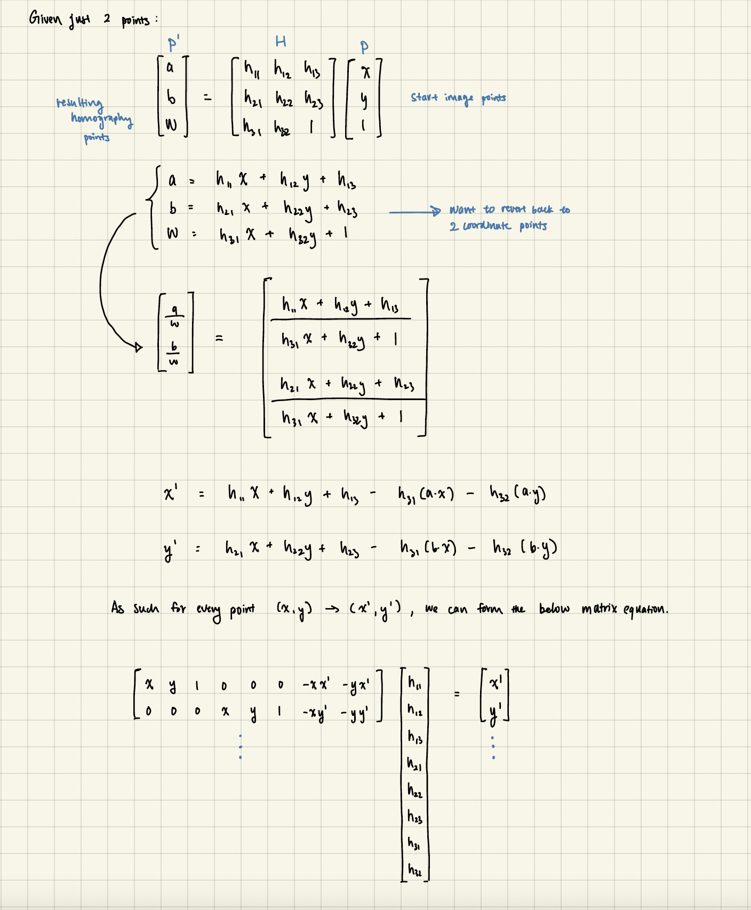
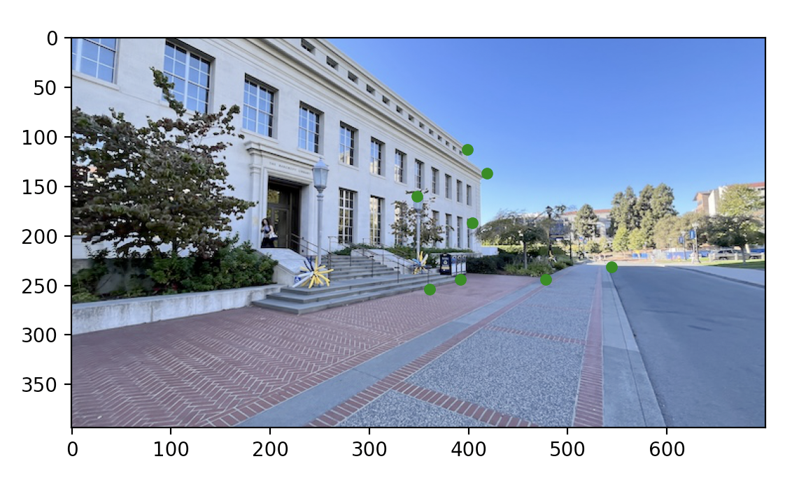
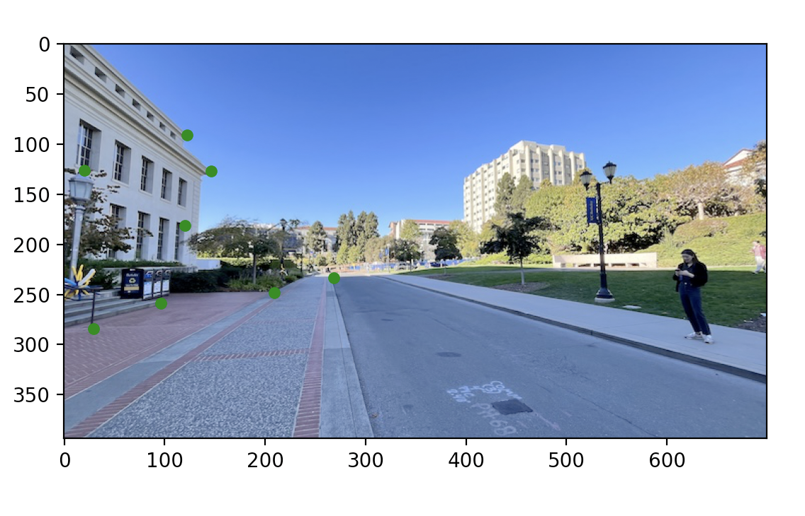
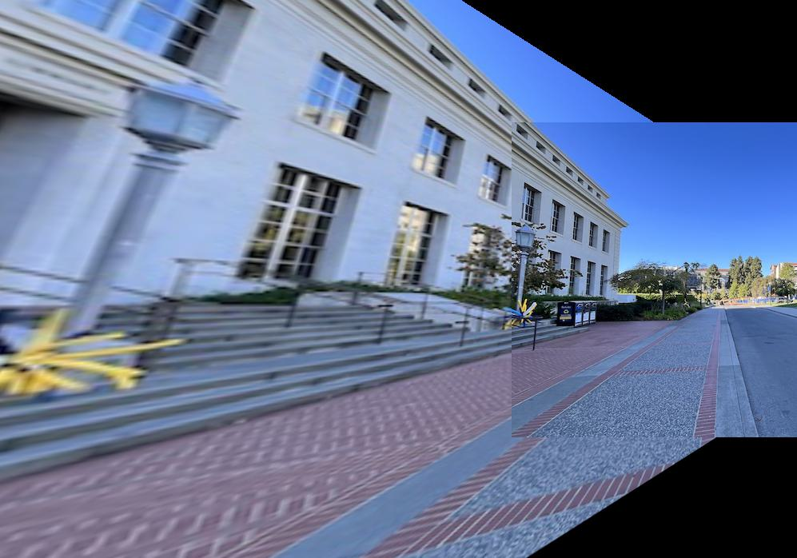
[[-4.809434, 0.435058, 1574.095920],
[-2.016017, -2.653928, 884.142516],
[-0.009115, 0.001786, 1.000000]]
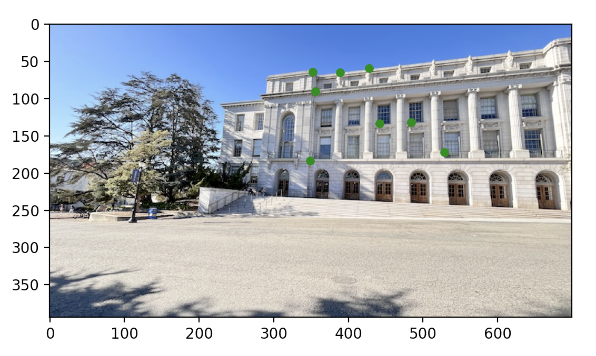
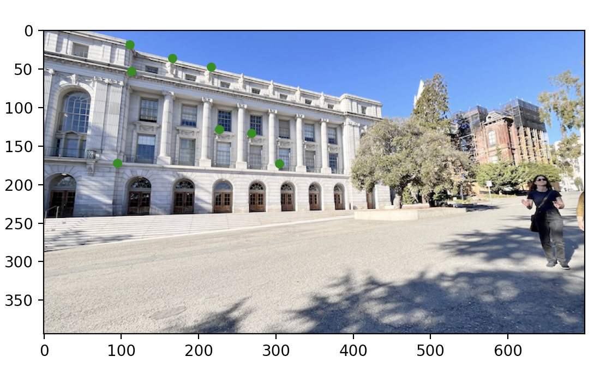
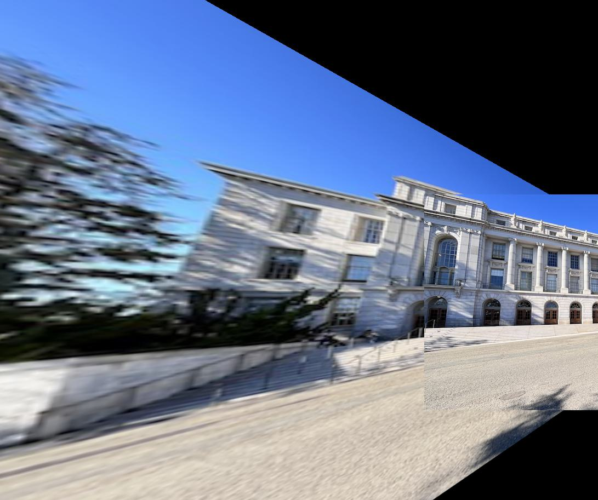
[[-5.103149, 0.191042, 1552.982810],
[-1.701319, -2.794560, 748.533853],
[-0.009160, 0.000884, 1.000000]]
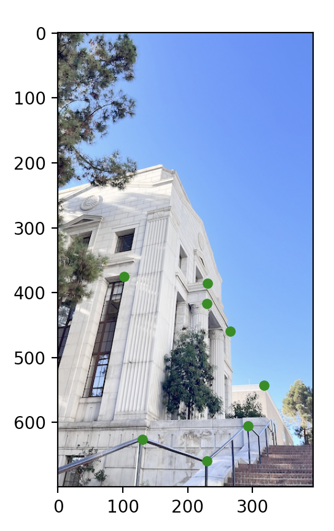
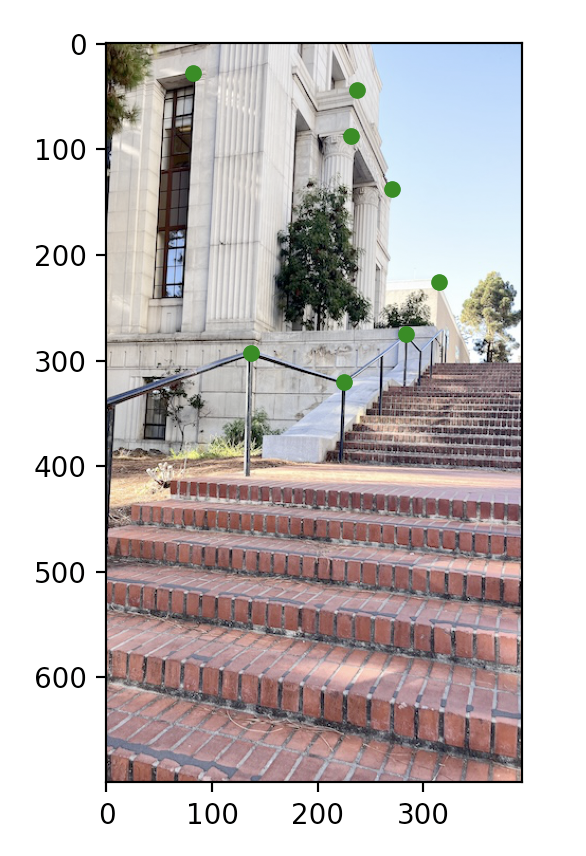
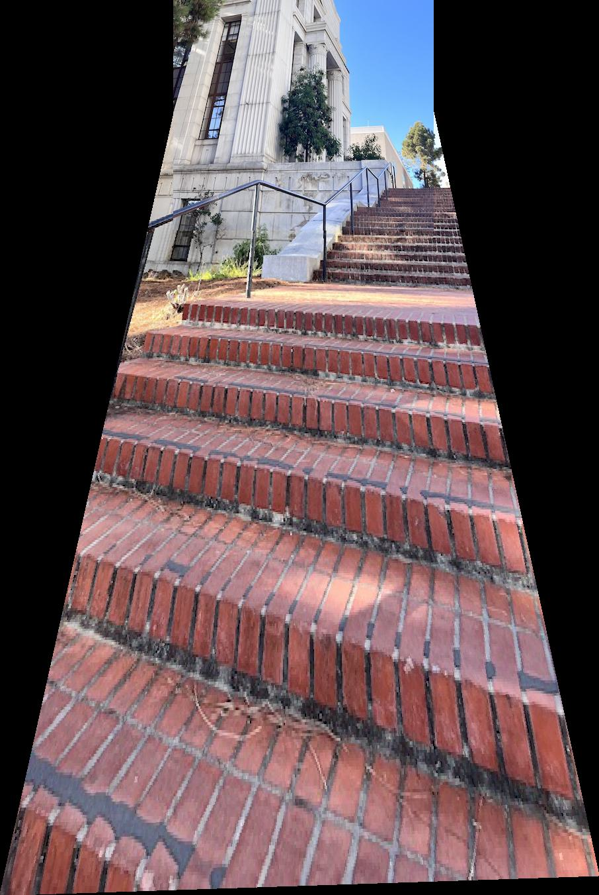
[[ 2.390320, 0.531985, -278.796592],
[ 0.030231, 2.889053, -1030.088330],
[-0.000005, 0.002672, 1.000000]]
A3
In the above, we showed the finished product after using our interpolation methods.
To break it down a bit more, we will show the warped results from 2 different interpolation
methods. The top one is from nearest neighbors, where directly round each coordinate to
their closest pixel's values. The bottom warped picture comes from a bilinear approach, where we
take the weighted average of the 4 corner pixel closest to our current location.
Bilinear took 16.735 seconds, while nearest neighbor only took 9.302 seconds. This makes sense
since nearest neighbor only requires two rounding operations, while we would need to calculate
the pixel of values of all 4 surrounding pixels and then do a weighted average for the bilinear
method. Since I did make my images really small, it is much harder to see the differences, but
when enlarged, the bilinear approach has smoother transition lines especially at edges and corners
compared to nearest neighbor. However, since the difference in quality isn't huge, I decided to use
nearest neighbor when calculating the images above since it is much faster.
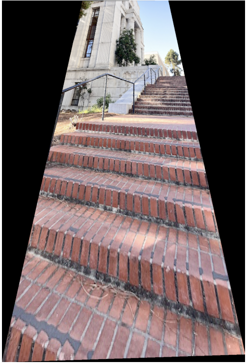
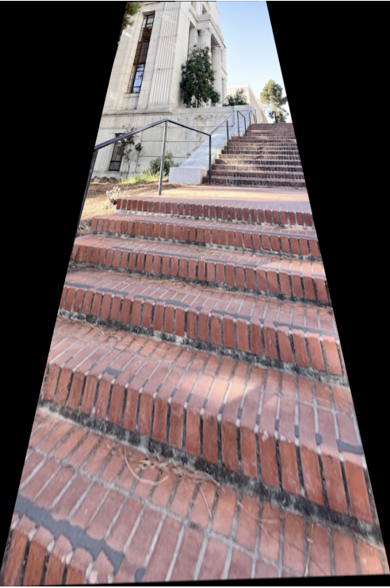
In the above mosaics that combined my warped images to my reference image, I used the correspondence points to match the images to the same plane and then use the offset to accurate place my images at the right place to blend into 1 continuous picture (AKA mosiac). I find the average values and weigh the entire overlap to blend. For the next part, I would want to improve it by using a mask or finding edges and applying a more tailored blend at the edges.
Recitification
Here we now try to take an object that is square/rectangle, and take a picture at an angle, but show the resulting image as a square/rectangle. It does make the surroundings around the object we are trying to rectify look really warped, which is why my second rectify ended up with my subject being tiny. There are also effects due to the order in which I determined the points, so in the first image, it not only rectified but also rotated the image somewhat to match the chosen correspondence points.
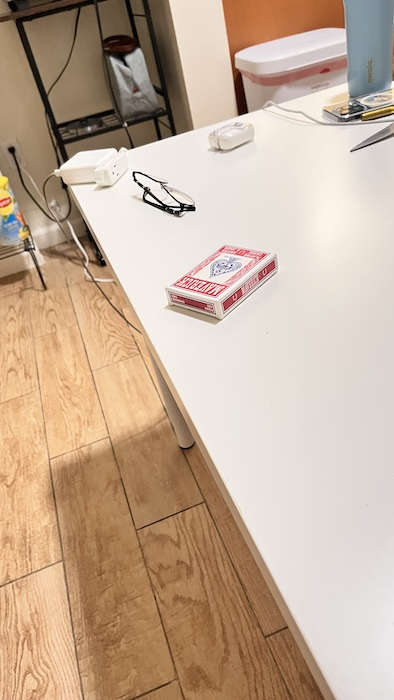
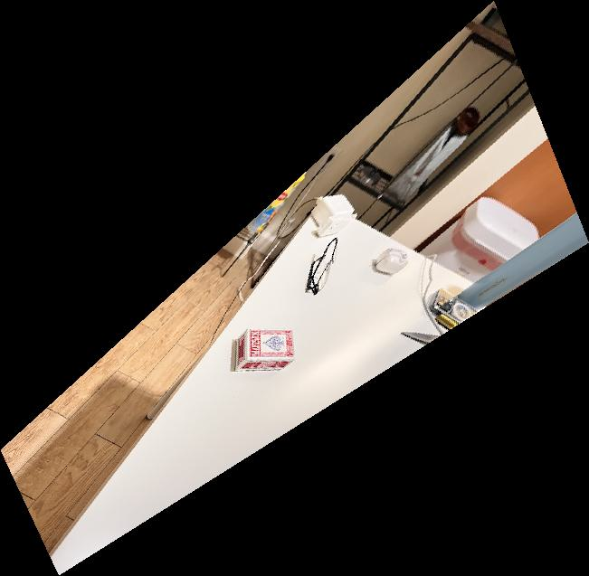
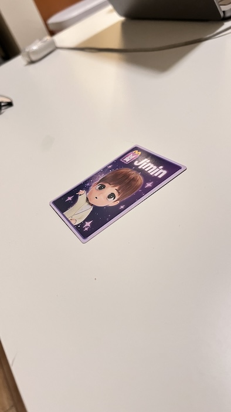
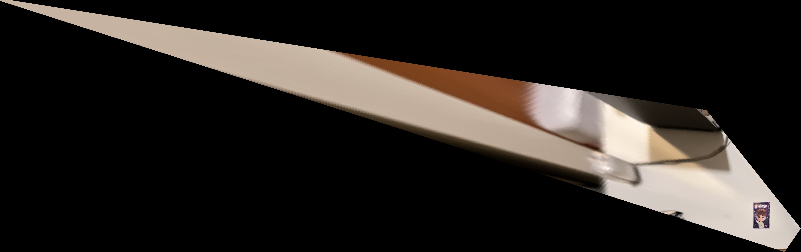